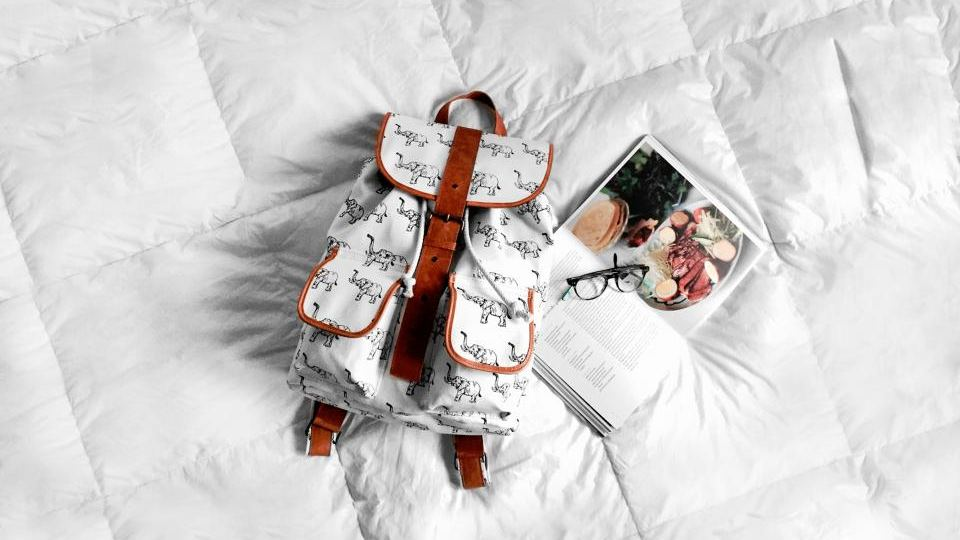
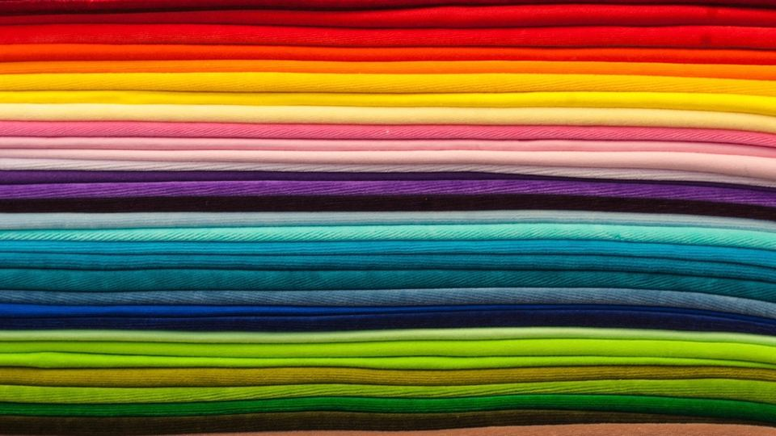

羽毛布団をクリーニングに出そうと調べてみると、「1枚いくら」「何枚パック」「送料込み」「保管付き」など、料金の表し方がサービスごとに違っていて、結局いくらかかるのか分かりにくいと感じる方も多いのではないでしょうか。
羽毛布団は買い替えると高価なものなので、できれば大切に長く使いたいところです。一方で、思っていたより費用がかかってしまうのも避けたいものです。
この記事では、羽毛布団のクリーニング料金がどのように決まるのか、比べるときにどこを見ればよいのかを順番に整理しました。申し込んだあとで「こんなはずではなかった」とならないための確認ポイントもまとめています。
羽毛布団クリーニングの料金の仕組み
羽毛布団のクリーニング料金は、おおまかに「基本料金」「送料や箱代」「オプション料金」の3つで決まります。宅配クリーニングでは、これに「保管料金」が加わることもあります。
表に出ている金額だけでなく、最後に支払う総額で比べることが、料金で迷わないための近道です。
- 基本料金：布団1枚ごとの料金か、何枚かをまとめたパック料金かで表し方が違います
- 送料・箱代：往復の送料や梱包用の袋・箱の代金が、基本料金に含まれているかを確認します
- オプション料金：防ダニ加工や撥水加工、抗菌加工など、希望した場合にかかる料金です
- 保管料金：次のシーズンまで預ける場合、無料で付いているか別料金かがサービスによって分かれます
一般的に、宅配で羽毛布団をクリーニングする場合、1枚あたり数千円台から1万円前後が目安です。サイズや枚数、オプションによって変わるため、詳しくは各サービスの公式サイトでご確認ください。
羽毛布団クリーニングの選び方｜料金で失敗しない4つのポイント

1. 1枚料金かパック料金か
羽毛布団を1枚だけ出したい場合は、1枚ごとの料金が設定されているサービスが分かりやすいです。家族の分をまとめて出す場合や、敷布団・毛布も一緒に出したい場合は、パック料金のほうが1枚あたりの負担が軽くなることがあります。
パック料金の場合は、「羽毛布団も同じパックに入れてよいか」「羽毛布団は別料金か」を確認しておきましょう。品目によって扱いが分かれていることがあります。
2. サイズや厚みで料金が変わるか
羽毛布団には、シングル・セミダブル・ダブルといったサイズの違いや、合掛け・肌掛け・本掛けといった厚みの違いがあります。サイズや厚みに関係なく同じ料金のサービスもあれば、大きいサイズは追加料金になるサービスもあります。
手元の布団のタグを見て、サイズや種類をあらかじめ確認しておくと、料金表と照らし合わせやすくなります。
3. 送料と保管が料金に含まれているか
宅配クリーニングでは、往復の送料が料金に含まれているかどうかで、総額が大きく変わることがあります。離島や一部の地域では、送料が別にかかる場合もあります。
また、春に出して秋まで預けられる保管サービスは、押し入れのスペースを空けたい方には便利です。保管が無料で付くのか、期間に応じて料金がかかるのかも、比べるときの大事な点になります。
4. オプションの中身と必要性
防ダニ加工や撥水加工などのオプションは、気になる方には心強い一方で、すべて付けると料金が上がります。アレルギーが気になる方は防ダニ加工、汗をかきやすい方は撥水加工、というように、自分の悩みに合うものだけを選ぶのがおすすめです。
「標準のクリーニングでどこまでしてもらえるのか」を先に確認すると、必要なオプションを見きわめやすくなります。
ポイント
迷ったときは、「出したい枚数」「送料込みか」「保管が必要か」の3つを書き出してから比べると、自分にとっての総額がつかみやすくなります。
おすすめの宅配クリーニングを比較
羽毛布団を1〜2枚だけ出したい方は1枚単位で頼めるサービス、家族の布団をまとめて出したい方や保管も使いたい方はパック料金や保管付きのサービス、という見方で比べると選びやすくなります。各サービスの特徴を下の表にまとめました。
おすすめサービス比較表
| サービス | 料金の目安 | 保管 | 特徴 | 申込み |
|---|---|---|---|---|
| イチオシしももとクリーニング | 羽毛布団3枚 13,800円 | 公式サイトで確認 | 他の人の布団と一緒に洗わない「完全個別洗い」 | 料金を見る |
| 2ふとんクリーニングのフレスコ | 羽毛掛布団2点 11,990円 | 公式サイトで確認 | 布団丸洗い専門。全国送料無料・決済手数料無料 | 料金を見る |
| 3ポニークリーニング | 公式サイトで確認 | 最大9か月 | 創業60年の老舗。保管付き | 料金を見る |
※料金・内容は各社の公式情報・広告素材の記載をもとにした目安です（2026年10月時点）。最新の料金・条件は必ず公式サイトでご確認ください。
| 比べるポイント | 見るところ |
|---|---|
| 基本料金 | 1枚料金かパック料金か、羽毛布団が対象か |
| サイズ | ダブルなど大きいサイズに追加料金があるか |
| 送料 | 往復の送料・箱代が含まれているか |
| 保管 | 保管の有無と期間、料金がかかるか |
| オプション | 防ダニ・撥水などの内容と料金 |
自宅やコインランドリーで洗う場合との違い

羽毛布団は、洗濯表示によっては自宅やコインランドリーで洗えるものもあります。費用を抑えられるのは大きな利点ですが、いくつか気をつけたい点もあります。
- 乾かす手間：羽毛は中まで乾きにくく、生乾きのままだとにおいの原因になることがあります
- 運ぶ負担：濡れた羽毛布団は重くなるため、コインランドリーへの持ち運びが大変です
- 側生地の傷み：洗濯機の中で布団が偏ったり、生地に負担がかかったりすることがあります
クリーニングに出すと、羽毛の状態に合わせて洗い方や乾燥を調整してもらえるのが安心な点です。費用と手間、布団の状態を考えて、自分に合う方法を選んでください。
利用するときの注意点
注意
- 洗濯表示を確認する：水洗いができない表示の布団や、特殊な素材の布団は、受け付けてもらえないことがあります
- 追加料金の条件を見ておく：大きいサイズや、ひどい汚れ・シミがある場合に追加料金がかかることがあります
- 仕上がりまでの期間：繁忙期は戻ってくるまで時間がかかることがあります。使う予定のある布団は、時期に余裕をもって出すと安心です
- 申し込みの締め切り：キャンペーンや保管サービスには、受付期間が決まっている場合があります
注意
側生地に破れや穴がある羽毛布団は、洗っている間に羽毛が出てしまうことがあります。出す前に布団全体を確かめ、気になる部分があれば申し込みのときに伝えておきましょう。
よくある質問
宅配クリーニングはお店に持ち込むより高いですか？
基本料金だけを見ると宅配のほうが高く見えることもありますが、送料込みのサービスや保管付きのサービスもあります。持ち運びの手間や保管の便利さも含めて考えると、総額での比較がしやすくなります。
羽毛布団と敷布団を一緒に出せますか？
多くのサービスで、羽毛布団と敷布団を一緒に申し込めます。ただし、パックに入れられる品目や枚数の上限はサービスによって違うため、申し込む前に確認しておきましょう。
羽毛布団のクリーニングは、どれくらいの頻度で出せばよいですか？
普段からカバーを使っていれば、数年に一度を目安にする方が多いです。汗をかきやすい方や、においが気になってきた場合は、少し間隔を短くしてもよいでしょう。
仕上がりに満足できなかった場合はどうなりますか？
再仕上げや補償の制度を用意しているサービスもあります。対象となる条件や申し出の期限はサービスごとに違うため、各社の公式サイトでご確認ください。
まとめ
この記事のポイント
- 羽毛布団のクリーニング料金は、基本料金・送料・オプション・保管の合計で考える
- 1枚料金かパック料金か、サイズで料金が変わるか、送料と保管が含まれているかを比べると総額が見えやすい
- オプションは自分の悩みに合うものだけを選び、出す前に洗濯表示と布団の傷みを確認する
羽毛布団は、手入れをすることで長く心地よく使えます。まずは出したい枚数と保管が必要かどうかを整理して、無理のない料金で頼めるサービスを選んでみてください。